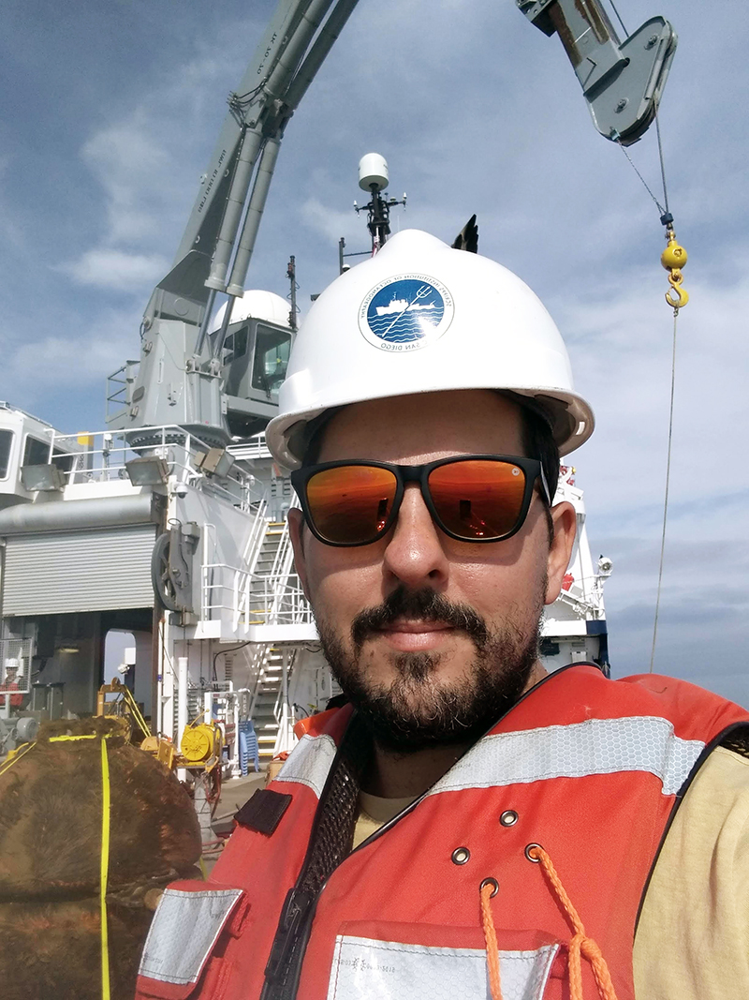
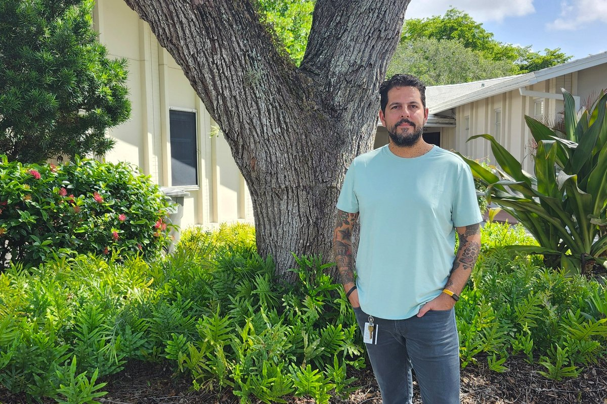

Milan Curcic
Email | GitHub | X | Google Scholar


Welcome to my page!
I'm a Serbian-American scientist & author. Currently I hold a joint appointment as an Assistant Professor of Ocean Sciences at the University of Miami's Rosenstiel School of Marine, Atmospheric, and Earth Sciences and a Core Faculty at the Frost Institute for Data Science and Computing.
I study ocean surface waves and their role in atmosphere and ocean surface boundary layers using theory, measurements, and numerical modeling. My PhD dissertation (2015) was the first formulation of momentum-conserving wind-wave-current coupling. You can find my academic group's GitHub page here. I currently advise two PhD students, Susan Harrison (started Fall 2024) and Stephen Casey (started Spring 2025). In 2025, I advised a postdoctoral associate Chong Jia.
My work is mainly funded by the US National Science Foundation and the Office of Naval Research. I'm also a recent recipient of an NSF CAREER award to study wave tearing in hurricanes.
I currently have a fully funded opening for a PhD student to lead research on measuring and modeling the tearing of steep waves by strong wind. Email me if you're interested.
Previously, I co-founded Cloudrun (a weather prediction SaaS), Fortran-lang (an open-source software community), and Henet (an ocean wave measurement technology).
I live in Boca Raton, FL, and am a proud dad of two boys, Nolan (6 years old) and Liam (deceased at birth on August 9, 2022).
Please email me if you think I can help with anything!
Books
Media
Speaking
- Wave Action Balance (2026)
- Wave Tearing by Wind (2025)
- Short Waves on Longer Waves (2024)
- Earth System Prediction (2023)
- Ocean Surface Drag Estimates (2019)
Papers
- Knobler et al. (2026). “A Field Study of Breaking Waves in Developing Seas.” Journal of Physical Oceanography.
- Detelich et al. (2026). “Modeling the Seasonality of Wind-Driven Hydrocarbon Waves in Titan's Polar Lakes.” Journal of Geophysical Research: Planets.
- Schneck et al. (2026). “Modeling Wind-Driven Waves on Other Planets: Applications to Mars, Titan, and Exoplanets.” Journal of Geophysical Research: Planets.
- Ribal et al. (2026). “Global wave model performance in the vicinity of the Monterey Bay, California.” Ocean Modelling.
- Vinci et al. (2026). “Refractivity Estimation Using a Phase-Coherent Vertical Array.” IEEE Transactions on Antennas and Propagation.
- Jia & Curcic (2025). “Ocean Wave Slope Effects on Global Air-Sea Turbulent Heat Flux.” Geophysical Research Letters.
- Shi et al. (2025). “Sea Surface Roughness Estimation Using a UAV.” IEEE Geoscience and Remote Sensing Letters.
- Ortiz-Suslow et al. (2025). “Accounting for Ocean Waves and Current Shear in Wind Stress Parameterization.” Boundary-Layer Meteorology.
- Curcic (2025). “Revisiting the hydrodynamic modulation of short surface waves by longer waves.” Journal of Fluid Mechanics.
- Lyu et al. (2025). “Reduction of air-sea momentum flux due to whitecap residual foam observed during a laboratory experiment.” Scientific Reports.
- Benbow et al. (2025). “Fair-Weather Nearshore Surface Winds: Observational Insights and Gaussian Process Regression Analysis.” Journal of Geophysical Research: Oceans.
- Tan et al. (2025). “Wind-Wave Momentum Flux in Steep, Strongly Forced, Surface Gravity Wave Conditions.” Journal of Geophysical Research: Oceans.
- Elipot et al. (2024). “Clouddrift: a Python package to accelerate the use of Lagrangian data for atmospheric, oceanic, and climate sciences.” Journal of Open Source Software.
- Tan et al. (2023). “Laboratory Wave and Stress Measurements Quantify the Aerodynamic Sheltering in Extreme Winds.” Journal of Geophysical Research: Oceans.
- Hlywiak et al. (2023). “Evaluating Atmospheric Surface Layer Flux Parameterization within the Coastal Regime.” Monthly Weather Review.
- Kedward et al. (2022). “The State of Fortran.” Computing in Science & Engineering.
- Dobbelaere et al. (2022). “Impacts of Hurricane Irma (2017) on wave-induced ocean transport processes.” Ocean Modelling.
- Wang et al. (2021). “Propagating Mechanisms of the 2016 Summer BSISO Event: Air-Sea Coupling, Vorticity, and Moisture.” Journal of Geophysical Research: Atmospheres.
- Ott et al. (2020). “A Fortran-Keras Deep Learning Bridge for Scientific Computing.” Scientific Programming.
- Curcic & Haus (2020). “Revised estimates of ocean surface drag in strong winds.” Geophysical Research Letters.
- Haza et al. (2019). “Wind-Based Estimations of Ocean Surface Currents From Massive Clusters of Drifters in the Gulf of Mexico.” Journal of Geophysical Research: Oceans.
- Curcic (2019). “A parallel Fortran framework for neural networks and deep learning.” ACM SIGPLAN Fortran Forum.
- Li et al. (2019). “Uncertainty Propagation in Coupled Atmosphere-Wave-Ocean Prediction System: A Study of Hurricane Earl (2010).” Monthly Weather Review.
- Carlson et al. (2018). “Surface Ocean Dispersion Observations From the Ship-Tethered Aerostat Remote Sensing System.” Frontiers in Marine Science.
- Haza et al. (2018). “Drogue-Loss Detection for Surface Drifters during the Lagrangian Submesoscale Experiment (LASER).” Journal of Atmospheric and Oceanic Technology.
- Dietrich et al. (2018). “Sensitivity of Storm Surge Predictions to Atmospheric Forcing during Hurricane Isaac.” Journal of Waterway, Port, Coastal, and Ocean Engineering.
- Laxague et al. (2017). “Gravity-Capillary Wave Spectral Modulation by Gravity Waves.” IEEE Transactions on Geoscience and Remote Sensing.
- Lindo-Atichati et al. (2016). “Description of surface transport in the region of the Belizean Barrier Reef based on observations and alternative high-resolution models.” Ocean Modelling.
- Mariano et al. (2016). “Statistical properties of the surface velocity field in the northern Gulf of Mexico sampled by GLAD drifters.” Journal of Geophysical Research: Oceans.
- Chen & Curcic (2016). “Ocean surface waves in Hurricane Ike (2008) and Superstorm Sandy (2012): Coupled model predictions and observations.” Ocean Modelling.
- Judt et al. (2016). “Atmospheric forcing of the upper ocean transport in the Gulf of Mexico: From seasonal to diurnal scales.” Journal of Geophysical Research: Oceans.
- Curcic et al. (2016). “Hurricane-induced ocean waves and Stokes drift and their impacts on surface transport and dispersion in the Gulf of Mexico.” Geophysical Research Letters.
- Zhu et al. (2016). “Impact of storm-induced cooling of sea surface temperature on large turbulent eddies and vertical turbulent transport in the atmospheric boundary layer of Hurricane Isaac.” Journal of Geophysical Research: Oceans.
- Coelho et al. (2015). “Ocean current estimation using a Multi-Model Ensemble Kalman Filter during the Grand Lagrangian Deployment experiment (GLAD).” Ocean Modelling.
- Jacobs et al. (2014). “Data assimilation considerations for improved ocean predictability during the Gulf of Mexico Grand Lagrangian Deployment (GLAD).” Ocean Modelling.
- Donelan et al. (2012). “Modeling waves and wind stress.” Journal of Geophysical Research: Oceans.
- Nickovic et al. (2011). “Method for efficient prevention of gravity wave decoupling on rectangular semi-staggered grids.” Journal of Computational Physics.
Software
- University of Miami Wave Model - a spectral wave model
- Unified Wave INterface Coupled Model - a momentum-conserving atmosphere-wave-ocean coupled model
- neural-fortran - a deep learning framework for Fortran applications
- tsunami - a parallel 2-d shallow water solver (running example of the Modern Fortran book)
- datetime-fortran - a date and time library for Fortran
- functional-fortran - a functional programming library for Fortran
- 2wave - a hydrodynamic modulation model for short waves riding on long waves
- Daily Dune - Frank Herbert's Dune quotes reader
- battlemat - a virtual tabletop for tactical roleplaying games